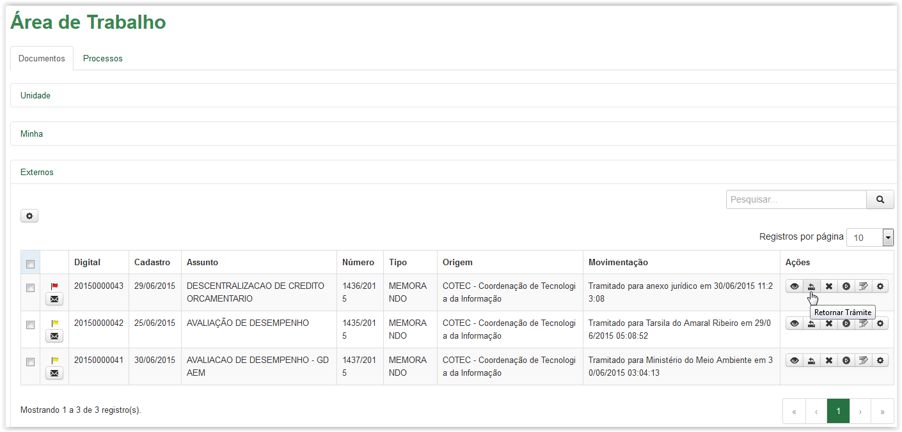
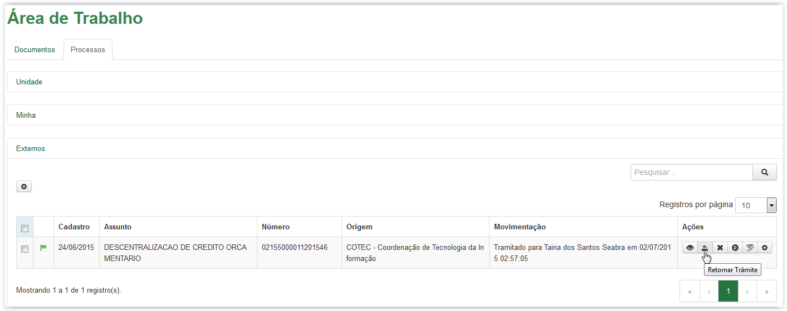
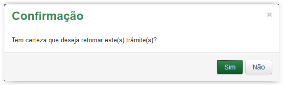
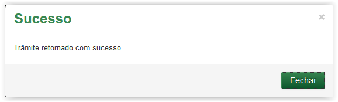
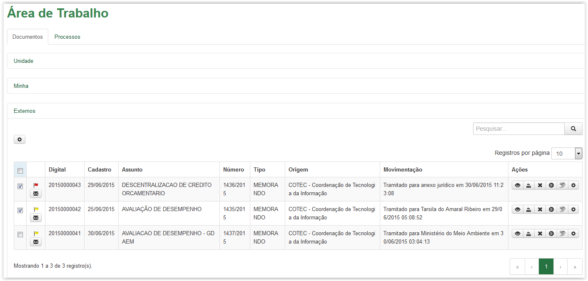
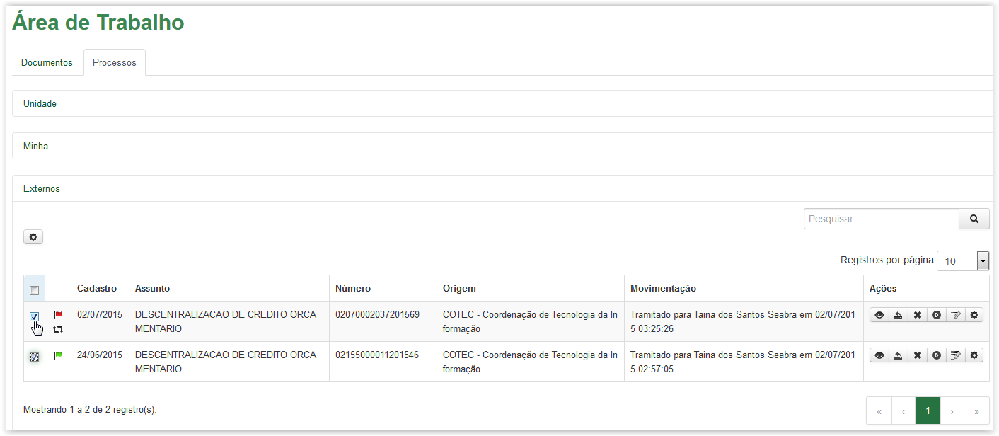
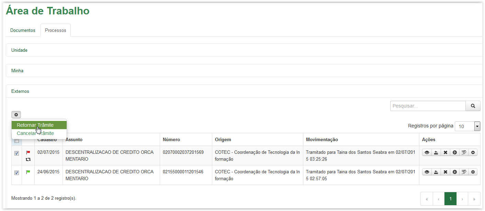
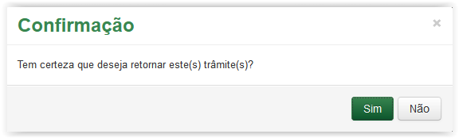

Retornar trâmite
Para retornar um único trâmite, clique no ícone disponível na coluna Ações da Área de Trabalho. Esse ícone está disponível tanto na aba de Documentos quanto na aba de Processos:

Aba Documentos - Ícone Retornar Trâmite

Aba Processos - Ícone Retornar Trâmite
A mensagem de confirmação é apresentada:

Mensagem de confirmação para retornar trâmite
Ao clicar no botão  o sistema volta para a Área de Trabalho sem efetuar o retorno do trâmite. No entanto, ao clicar no botão
o sistema volta para a Área de Trabalho sem efetuar o retorno do trâmite. No entanto, ao clicar no botão  , o sistema apresenta mensagem de sucesso:
, o sistema apresenta mensagem de sucesso:

Mensagem de sucesso
Após o retorno, o artefato ficará disponível para o autor a partir da Área Minha.
É possível retornar vários trâmites de uma só vez. Assim, selecione  os artefatos desejados, conforme abaixo:
os artefatos desejados, conforme abaixo:

Aba Documentos - Selecionando documentos para retorno

Aba Processos - Selecionando processos para retorno
Clique no ícone  e selecione a opção Retornar Trâmite:
e selecione a opção Retornar Trâmite:

Selecionando a opção Retornar Trâmite
Após clicar na opção Retornar Trâmite o sistema apresenta a mensagem de confirmação abaixo:

Mensagem de confirmação para retornar trâmite
Ao clicar no botão  o sistema volta para a Área de Trabalho sem efetuar o retorno do trâmite. No entanto, ao clicar no botão
o sistema volta para a Área de Trabalho sem efetuar o retorno do trâmite. No entanto, ao clicar no botão  , o sistema apresenta mensagem de sucesso:
, o sistema apresenta mensagem de sucesso:
Mensagem de sucesso
Após o retorno, o artefato ficará disponível para o autor a partir da Área Minha.
Created with the Personal Edition of HelpNDoc: Easily create iPhone documentation